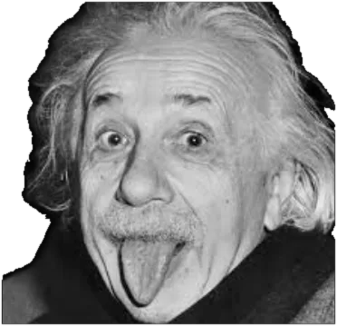

Visão geral
- Eixo Existencial
- Competência Pessoal
- Tríade
- Perspectiva
- C-Modes
- C4 · C6
- A partir da Confiança, assume traços do
- E-Mode 8
- A partir do Medo, assume traços do
- E-Mode 7
A partir do Medo
Perspectiva · o que pensa
Tenho que conhecer tudo.
Preciso me capacitar para poder agir.
Afetiva · o que sente
Medo de ser inútil, incapaz, incompetente.
Efetiva · o que faz
Especializar-se compulsivamente.
Acúmulo inútil de conhecimento.
A partir da Confiança
Perspectiva · o que pensa
Sou competente.
Posso conhecer a realidade e agir nela.
Afetiva · o que sente
Útil e hábil.
Efetiva · o que faz
Saber e saber fazer.
Entende a realidade e participa do mundo.
Exemplos
- O Professor“La Casa de Papel”
- Stephen HawkingFísico

Albert EinsteinCientista- Sheldon Cooper“The Big Bang Theory”
O Eixo Existencial da Competência Pessoal
O Eixo Existencial da Competência Pessoal se configura quando, nos primeiros anos de vida, o menino ou a menina desenvolve uma atenção especial ao âmbito do conhecimento, da observação, da compreensão do mundo e da construção de ferramentas internas para interagir com a realidade.
Este Eixo está ligado ao desejo de explorar, entender, integrar informações e cultivar clareza para tomar decisões de maneira autônoma e consciente.
Assim, a Competência Pessoal se torna um Eixo articulador da existência: uma forma de organizar a experiência em torno do conhecimento da realidade e da capacidade de agir com lucidez e autonomia.
O Eixo da Competência Pessoal vivido a partir do Medo
A pessoa teme não estar preparada, não saber o suficiente ou não contar com os recursos necessários para enfrentar o que a realidade exige dela. Diante dessa percepção, desenvolve uma atitude de reserva, acúmulo de conhecimento e controle interno, e prioriza o pensamento em vez da ação ou do contato emocional. Tende a evitar o inesperado ou o que implique exposição, porque vive isso como uma ameaça à sua individualidade.
A partir dessa vivência, pode expressar:
- Retraimento emocional e físico, como forma de proteger seu mundo interno.
- Tendência a acumular informações ou recursos sem colocá-los em prática.
- Dificuldade para sustentar o vínculo emocional direto, por medo de se sentir invadida ou sobrecarregada.
- Sensação de fragilidade diante do externo, compensada com controle, análise e distância.
- Necessidade de poupar energia física e emocional, evitando o que implique uma alta demanda.
O Eixo da Competência Pessoal vivido a partir da Confiança
A pessoa sente que seu mundo interno é um espaço seguro e fecundo, e que seus recursos intelectuais e emocionais estão disponíveis para serem compartilhados, aplicados e enriquecidos em contato com a realidade. Não precisa saber tudo para agir, nem se retirar para se sentir protegida. Pode observar e participar, pensar e estar presente, sem que isso represente uma ameaça.
A partir dessa vivência, desenvolve:
- Uma curiosidade ativa, que não se esgota na observação, mas se traduz em compromisso e ação.
- Capacidade de se envolver com a realidade, integrando pensamento, emoção e presença.
- Confiança de que seus recursos internos são suficientes para enfrentar o inesperado.
- Abertura ao vínculo e ao aprendizado conjunto, sem medo de ser invadida.
- Disposição para compartilhar o que sabe, sem medo de ficar sem energia ou sem um lugar próprio.
Contexto da infância
Explorar o contexto da infância permite compreender mais profundamente como certos traços se desenvolvem desde cedo. Muitos dos padrões de comportamento que observamos nos adultos têm raízes em experiências e dinâmicas familiares da infância. Compreender o contexto em que se estabeleceu o modo como enfrentamos nossa existência desde cedo nos permite entender como enfrentamos hoje as situações e os desafios atuais.
Crianças investigadoras e observadoras
Desde cedo, a criança com E-Mode 5 tende a se destacar pela curiosidade intelectual e pelo desejo de compreender o mundo ao seu redor.
- São observadoras e analíticas, e podem se sentir mais à vontade quando têm tempo para explorar e absorver informações de forma independente.
- Sua autoestima costuma estar ligada à sua capacidade intelectual e ao acúmulo de conhecimentos.
- Podem se sentir mais satisfeitas quando são reconhecidas por sua inteligência e suas habilidades analíticas.
- Às vezes podem se retrair emocionalmente se percebem que não têm o espaço necessário para explorar seus próprios interesses.
- Em sua relação com o medo e a privacidade, podem ser reservadas e proteger sua energia emocional limitando as informações pessoais que compartilham.
- Nas brincadeiras e nas situações sociais, podem preferir observar a participar ativamente, e se inclinam para atividades solitárias como a leitura, o computador ou o estudo.
Contexto familiar positivo
Um ambiente que valorizava e incentivava a curiosidade, o aprendizado e a independência intelectual:
- Cuidadores que ofereciam espaço e apoio para a exploração pessoal.
- Acesso a livros, ferramentas e experiências que estimulavam a investigação própria.
- Valorização do pensamento crítico e incentivo à autodisciplina.
- Respeito pelo espaço pessoal e pela necessidade de independência.
Mensagem percebida na infância: “Suas necessidades não são um problema.”
Contexto familiar negativo
Um ambiente emocionalmente exigente ou invasivo:
- A criança pode ter se retraído como forma de proteção.
- O conhecimento se torna um refúgio seguro.
- O ambiente é percebido como intrusivo ou instável.
- Desenvolve-se uma forte autossuficiência e uma dependência dos recursos internos.
- Pode haver isolamento emocional e dificuldade para formar vínculos.
Mensagem percebida na infância: “Não é certo se sentir à vontade no mundo.”
A partir do Medo
O que pensa (Perspectiva), o que sente (Afetiva) e o que faz (Efetiva) o E-Mode 5 a partir da dinâmica do Medo.
| PensaPerspectiva | SenteAfetiva | FazEfetiva |
|---|---|---|
| «As pessoas me drenam; é melhor ficar sozinho.» | Ansiedade | Isola-se socialmente. |
| «Preciso saber mais antes de agir.» | Sobrecarga | Acumula informação sem aplicá-la. |
| «Se eu dominar completamente este assunto, vou me sentir seguro.» | Obsessão | Fica obcecado por um interesse específico. |
| «As emoções são irrelevantes; o que importa é o conhecimento.» | Negação | Ignora suas necessidades emocionais. |
| «Meu intelecto me torna melhor que os outros.» | Superioridade | Sente-se superior pelo seu conhecimento. |
| «Sempre há algo em que pensar para controlar o futuro.» | Preocupação | Concentra-se em prever problemas futuros sem se conectar com o presente. |
Personagem de referência: Dr. House (House)
O que pensa?
A partir do medo de ser inútil ou incompetente, seus pensamentos costumam girar em torno de proteger seus recursos internos e maximizar sua autossuficiência. Alguns exemplos da narrativa interna:
- Escassez de recursos: “Preciso conservar minha energia e meu conhecimento; não há o suficiente para compartilhar com os outros sem me esgotar.”
- Vulnerabilidade: “Se as pessoas perceberem o que eu não sei, vão me ver como incompetente.”
- Necessidade de isolamento: “Preciso de mais tempo e espaço para pensar e trabalhar nos meus projetos sem interrupções.”
- Desconfiança: “Não posso confiar que os outros entendam ou valorizem minha necessidade de privacidade.”
- Autossuficiência: “É melhor depender só de mim; assim não preciso de ninguém e ninguém me decepciona.”
- Perfeccionismo intelectual: “Tenho que continuar aprendendo e saber mais para estar preparado para qualquer situação.”
- Análise antes da ação: “Analisar este problema é mais seguro do que agir precipitadamente e errar.”
- Desconforto emocional: “As emoções são imprevisíveis e perturbadoras; é melhor mantê-las sob controle.”
- Intelectualização excessiva: “Se consigo entender algo logicamente, posso controlá-lo e não preciso me sentir vulnerável.”
- Avaliação contínua: “Este ambiente ou esta relação me drena? Quanto posso me comprometer sem perder minha independência?”
Esses pensamentos nascem de uma necessidade de independência e competência intelectual. Podem torná-lo muito inovador e perspicaz, mas também levá-lo a um isolamento pouco saudável e a se desconectar da realidade emocional e social se não forem mantidos em equilíbrio.
O que sente?
A partir do medo de ser inútil, incompetente ou incapaz de funcionar de maneira autônoma, pode experimentar emoções intensas que costuma conter ou analisar em vez de expressar:
- Ansiedade: preocupação por não conseguir adquirir o conhecimento ou a habilidade suficientes para lidar com o mundo e seus desafios.
- Medo: de ser sobrecarregado pelas demandas externas e de que invadam seu espaço pessoal e seus recursos.
- Isolamento: sentimentos de desconexão dos outros, como resultado de sua retirada para o mundo interior.
- Insegurança: dúvidas sobre sua capacidade de interagir socialmente ou de expressar suas necessidades.
- Frustração: irritação com as distrações ou interrupções que perturbam seu tempo de reflexão ou estudo.
- Desapego emocional: embora possa sentir emoções profundas, costuma ficar mais à vontade mantendo distância delas.
- Expressão emocional limitada: pode reprimir ou esconder suas emoções, porque as percebe como uma vulnerabilidade ou uma distração da sua busca de conhecimento.
- Desconfiança: suspeita sobre as intenções dos outros e preocupação de que invadam sua privacidade ou sua independência.
- Sentimento de insuficiência: a sensação de que nunca sabe o suficiente ou de que não consegue contribuir de maneira significativa.
- Superestimulação: esgotamento ou sobrecarga diante de interações sociais ou estímulos emocionais em excesso.
- Nostalgia: às vezes, tristeza pela conexão e pelas experiências que seu isolamento o faz perder.
Se não forem trabalhadas, essas emoções podem perpetuar um ciclo de retirada e reclusão; mas também podem ser um catalisador do crescimento pessoal se a pessoa reconhecer e abordar sua raiz.
O que faz?
A partir do Medo, é movido pelo temor profundo de ser inútil, incompetente ou incapaz, e pela necessidade de minimizar suas necessidades e manter sua independência. Pode apresentar estes comportamentos:
- Retirada social: isola-se e prefere a solidão para se proteger das demandas dos outros e conservar seus recursos internos.
- Acúmulo de conhecimento: concentra-se em aprender e acumular informações como forma de se sentir preparado e competente.
- Observação em vez de participação: prefere observar a uma distância segura em vez de participar diretamente de atividades ou interações.
- Minimização das necessidades: tenta viver com o mínimo, reduzindo suas necessidades pessoais para não depender dos outros.
- Procrastinação ou paralisia por análise: adia a ação até sentir que tem toda a informação necessária, algo que às vezes nunca acontece.
- Sigilo: é muito reservado e compartilha pouco sobre sua vida pessoal ou seus pensamentos.
- Conservação de energia: calcula quanta energia gasta nas atividades diárias e sociais para não se sentir sobrecarregado.
- Especialização: concentra-se intensamente em áreas de interesse específico e costuma se tornar especialista em campos muito particulares.
- Distanciamento: mantém uma forte distância dos outros, o que às vezes se traduz em falta de conexão emocional.
São mecanismos de defesa para lidar com seus medos e ansiedades; quando não são trabalhados, podem levar a mais isolamento e desconexão dos outros.
A partir da Confiança
O que pensa, o que sente e o que faz o E-Mode 5 a partir da dinâmica da Confiança.
| PensaPerspectiva | SenteAfetiva | FazEfetiva |
|---|---|---|
| «Compartilhar o que sei pode ajudar os outros.» | Generosidade | Compartilha seu conhecimento com os outros. |
| «Posso aprender com a experiência dos outros.» | Curiosidade | Busca interações sociais significativas. |
| «Usar o que sei para fazer diferença é gratificante.» | Satisfação | Aplica seu conhecimento em projetos práticos. |
| «Expressar minhas emoções me aproxima dos outros.» | Conexão | Abre-se emocionalmente com pessoas de confiança. |
| «Viver o momento me enriquece.» | Presença | Aprecia o momento presente sem analisar demais. |
| «Contribuir com minha comunidade me dá propósito.» | Compromisso | Participa ativamente da comunidade. |
O que pensa?
Quando vive seu Eixo a partir da Confiança, seus padrões de pensamento se ampliam e se tornam mais positivos, construtivos e orientados à ação:
- Abertura a novas experiências: “Estou pronto para participar mais plenamente da vida e explorar novas experiências.”
- Capacidade de agir: “Confio na minha habilidade de interagir com o mundo e lidar com o que vier.”
- Compreensão emocional: “É valioso reconhecer e expressar minhas emoções e me conectar com os sentimentos dos outros.”
- Confiança nos relacionamentos: “Posso me aproximar dos outros sem medo de perder minha independência ou minha privacidade.”
- Coragem para se expressar: “Tenho ideias valiosas para compartilhar e posso expressá-las sem medo do julgamento.”
- Otimismo: “O mundo tem muito a oferecer e estou disposto a descobri-lo.”
- Autoafirmação: “Minhas necessidades e desejos são importantes e posso expressá-los de maneira saudável.”
- Pragmatismo: “Posso encontrar soluções práticas que também levem em conta o componente emocional das situações.”
- Equilíbrio entre pensar e fazer: “O equilíbrio entre refletir e participar me torna mais efetivo e completo.”
- Reconhecimento do potencial: “Vejo e valorizo o potencial em mim e nos outros.”
Esses pensamentos refletem a passagem de uma perspectiva interiorizada e analítica para uma atitude mais proativa e engajada, na qual a sabedoria e a observação são usadas para participar ativamente do mundo.
O que sente?
Suas emoções se caracterizam por uma maior abertura e conexão com os outros, e por mais confiança para expressar o que sente:
- Confiança: segurança em suas habilidades e conhecimentos, sem necessidade de se isolar.
- Curiosidade: um desejo saudável e equilibrado de explorar novas ideias e experiências com entusiasmo.
- Competência: a sensação de estar preparado e ser capaz de enfrentar os desafios do mundo exterior.
- Compaixão: empatia pelos outros, reconhecendo as emoções alheias e se conectando com elas.
- Generosidade emocional: disponibilidade para compartilhar seus pensamentos e sentimentos, e para acompanhar os outros em sua expressão emocional.
- Coragem: a capacidade de enfrentar o desconhecido ou as situações desafiadoras com bravura.
- Aceitação: o reconhecimento de que as emoções são parte natural da vida e não algo que precise ser controlado ou reprimido em excesso.
- Equilíbrio: entre o pensar e o sentir, sem cair na intelectualização excessiva.
- Paz: uma calma interna, sabendo que pode lidar com o que vier sem se antecipar mentalmente nem se isolar.
- Alegria: a capacidade de desfrutar das interações e das experiências, encontrando prazer em estar no mundo e com os outros.
Passa da reserva e do retraimento para uma maior participação e vitalidade emocional: torna-se mais direto e pode mostrar sua força de uma maneira mais aberta e acessível.
O que faz?
Suas ações combinam seu profundo amor pelo conhecimento com uma maior conexão e participação no mundo:
- Generoso com seu conhecimento: compartilha informações e saberes de maneira aberta, e usa sua sabedoria para ajudar os outros.
- Participativo: envolve-se mais com as pessoas e as atividades, em vez de se retrair na observação ou na análise.
- Colaborativo: trabalha com os outros, reconhecendo que as contribuições de cada um enriquecem o resultado final.
- Emocionalmente equilibrado: reconhece e expressa suas emoções de maneira mais aberta, sem que elas interfiram em sua lógica.
- Pragmático: coloca em prática suas ideias e pesquisas, e toma medidas concretas em vez de ficar na teoria.
- Aberto ao aprendizado: aceita que não precisa saber tudo e que está tudo bem aprender com as experiências e os conhecimentos dos outros.
- Menos apegado à independência: permite que os outros o ajudem e aceita que nem sempre precisa ser autossuficiente.
- Comunicação clara: expressa-se de forma mais clara e direta, e fala de suas necessidades e desejos sem rodeios.
- Aventureiro: se arrisca a sair da sua zona de conforto e explorar novas ideias e experiências.
- Comprometido emocionalmente: forma conexões mais profundas e significativas com as pessoas, e se permite ser vulnerável.
Seu potencial para a sabedoria e a visão se combina com a capacidade de decidir de maneira proativa e confiante: é ao mesmo tempo contemplativo e prático, capaz de teorizar e também de agir com eficácia.
Do Medo à Confiança
A partir do Medo: dimensões separadas
A partir da Confiança: dimensões integradas
O processo de integração do E-Mode 5 começa quando ele deixa de agir, sentir e pensar a partir do medo, trabalhando ativamente seus temores e explorando novas possibilidades, e passa a fazê-lo a partir da confiança. Assim, enriquece sua maneira de enfrentar a existência e começa a manifestar traços positivos do E-Mode 8 a partir da Confiança (a autoconfiança e a assertividade), que geralmente não desenvolveu ou não estimulou o suficiente. Move-se em direção à coragem, para se conectar com seu poder pessoal e participar mais do mundo.
A integração é, portanto, o processo pelo qual se adquire uma gama mais ampla de competências, habilidades e recursos para construir uma existência mais plena e autêntica.
Perspectiva: do Medo à Confiança
Mudar seu padrão de pensamento habitual pode ser decisivo. Algumas mudanças que facilitam o processo:
- Da observação à participação: “Participar ativamente me dá experiência e conhecimento valiosos.”
- Da autonomia extrema à interdependência: “É saudável e enriquecedor depender dos outros de vez em quando.”
- De acumular informação a compartilhar sabedoria: “O que já sei pode ser valioso para os outros.”
- Da retirada à conexão emocional: “Compartilhar minhas emoções me conecta com os outros e fortalece os relacionamentos.”
- Da análise excessiva à experiência direta: “Vou aprender mais fazendo e experimentando.”
- Da dúvida à confiança: “Confio na minha habilidade de lidar com situações novas e desafiadoras.”
- Da autoproteção à abertura: “Abrir-me a novas experiências enriquece minha vida.”
- Da especulação à ação: “Agir agora me traz clareza e resultados.”
- Do medo à aceitação: “Sou competente e capaz do jeito que sou.”
Essas mudanças exigem prática e tempo para se enraizar. Ajuda repetir conscientemente essas afirmações e observar como os novos padrões de pensamento afetam seu comportamento e seu nível de integração.
Afetiva: do Medo à Confiança
Tende a se refugiar no mundo da mente e dos conceitos, mas pode trabalhar suas emoções a favor da integração:
- Reconhecimento: reconhecer e nomear as emoções quando surgem, aceitando que são tão importantes quanto os pensamentos para a experiência humana.
- Presença emocional: praticar a atenção plena para observar as emoções sem julgá-las e compreender que são passageiras e, muitas vezes, menos avassaladoras do que parecem.
- Exploração construtiva: analisar de onde vêm as emoções, o que as desencadeia e como se manifestam no corpo e na mente, com a intenção de entendê-las e não de se distanciar delas.
- Expressão emocional: buscar maneiras seguras de expressá-las, como a escrita, a arte ou a música, ou compartilhá-las com amigos de confiança ou um terapeuta.
- Tolerância ao desconforto: aumentar aos poucos a tolerância ao desconforto emocional sem fugir para a mente; por exemplo, ficar em situações sociais mais tempo do que o habitual ou experimentar coisas novas que, no início, gerem ansiedade.
- Conexão com os outros: promover conversas emocionais com pessoas queridas para construir laços afetivos e se apoiar mutuamente.
- Assertividade emocional: comunicar as próprias necessidades e limites emocionais de maneira assertiva, em vez de se retrair ou evitar o conflito.
- Regulação emocional: estratégias saudáveis como a respiração profunda, a meditação ou as técnicas de relaxamento.
- Coragem para sentir: aceitar que sentir plenamente não diminui sua capacidade intelectual, mas enriquece sua compreensão do mundo e de si mesmo.
Assim, pode viver de forma mais equilibrada, integrando suas emoções à sua vida intelectual e social, algo fundamental para um desenvolvimento pleno e uma maior conexão com o mundo.
Efetiva: do Medo à Confiança
Comportamentos que podem ajudar:
- Participação social: aumentar conscientemente a participação em atividades sociais e comunitárias para fortalecer a conexão com os outros.
- Metas práticas: trabalhar em projetos ou metas que exijam uma ação direta e decidida.
- Decisões integrais: decidir não apenas com base na lógica, mas também na intuição e na consideração emocional.
- Oportunidades de liderar: assumir papéis de liderança, ainda que em pequena escala, a partir da confiança na sua capacidade de influenciar e conduzir.
- Comunicação emocional: praticar a expressão aberta de sentimentos e emoções com pessoas de confiança.
- Aventura e exploração: sair da zona de conforto para explorar novas ideias e experiências, não só no plano conceitual, mas na prática.
- Colaboração: trabalhar em equipe ou em projetos colaborativos, valorizando as contribuições dos outros tanto quanto as próprias.
- Atividade física: aumentar a presença no mundo físico com exercícios regulares, que ajudam a estar mais enraizado no presente.
- Expressão criativa: atividades criativas que permitam uma expressão pessoal além da teoria e da análise.
- Voluntariado e serviço: atividades em que possa contribuir com seu conhecimento e, ao mesmo tempo, se conectar com os outros.
- Atenção plena: práticas de meditação para se manter no presente e mais conectado com suas experiências emocionais e físicas.
- Pedir e aceitar ajuda: reconhecer quando precisa de ajuda e estar aberto a recebê-la.
Essas condutas ajudam a equilibrar sua tendência natural à retirada e à contemplação com a ação e a participação no mundo ao seu redor, e promovem uma vida mais integral e equilibrada.
Níveis de integração
Desintegrado
Isola-se do mundo, corta relações e mergulha em um mundo interior cada vez mais vazio. Pode ter percepções distorcidas e perturbadoras, e recusar qualquer ajuda. No extremo, deseja escapar completamente da realidade, o que pode levar a crises psicóticas ou comportamentos esquizoides.
- Efetiva: isolamento e desconexão; corta relações e mergulha em um mundo cada vez mais vazio e isolado.
- Afetiva: pode experimentar delírios e percepções perturbadoras, recusar qualquer ajuda e desejar escapar completamente da realidade.
- Perspectiva: uma visão desvinculada da realidade, que pode se manifestar em crises psicóticas ou comportamentos esquizoides.
Semi-integrado
Começa a sentir que suas habilidades são insuficientes e se concentra em se preparar e acumular conhecimentos. Torna-se mais inseguro e se refugia na segurança da sua mente. Desliga-se das necessidades dos outros, intensifica a atividade mental e reduz suas necessidades pessoais. Pode se tornar extremo e provocador, manter as pessoas à distância e desprezar quem não compreende suas ideias complexas.
- Efetiva: retraimento e obsessão; concentra-se na preparação e no acúmulo de conhecimentos.
- Afetiva: torna-se mais inseguro, intensifica a atividade mental e reduz suas necessidades pessoais.
- Perspectiva: uma visão mais fechada; desliga-se das necessidades dos outros e despreza quem não compreende suas ideias complexas.
Integrado
Supera a crença de ser um mero observador externo e participa ativamente da vida. Alcança seu desejo básico de competência, com clareza mental, conhecimento profundo e compaixão. É observador e perceptivo, e desenvolve habilidades para se mover no mundo com segurança. Mostra inovação e originalidade em seus interesses e projetos, e explora novas ideias e formas sem precisar competir com os outros.
- Efetiva: integra-se socialmente e participa de maneira ativa e lúcida da realidade.
- Afetiva: conexão emocional com os outros e com o ambiente.
- Perspectiva: uma visão integradora e prática.
C-Modes: C4 e C6
Os C-Modes (modos complementares) influenciam as características próprias do E-Mode de cada pessoa e as matizam, gerando maior variedade e riqueza nas condutas. São os E-Modes que ficam de cada lado do próprio: se alguém tem E-Mode 9, seus C-Modes são o 8 e o 1.
Compreender os C-Modes ajuda a entender a multiplicidade de comportamentos que pessoas com um mesmo E-Mode podem ter. Um E-Mode pode manifestar traços positivos e negativos de um ou de ambos os C-Modes, só os negativos, só os positivos, ou uma combinação.
C-Mode4
Contribuição positiva · Confiança
- Profundidade emocional
- Criatividade
- Empatia
Contribuição negativa · Medo
- Melancolia
- Sensibilidade excessiva
- Isolamento
C-Mode6
Contribuição positiva · Confiança
- Lealdade
- Responsabilidade
- Vigilância
Contribuição negativa · Medo
- Ansiedade
- Dúvida
- Paranoia
Tríade de perspectiva
As três tríades agrupam os E-Modes segundo a dimensão em que se fixa principalmente seu modo de enfrentar a existência: a efetiva (ação), a afetiva (emoção) e a de perspectiva (pensamento).
O E-Mode 5 faz parte da tríade de perspectiva: abrange as funções de percepção e pensamento de que precisamos para nos orientar e nos sentir seguros. Está associada à inteligência e ao processamento da informação.
- Foco: a compreensão, a análise e a conceituação.
- Busca: segurança.
- Sentimento oculto: medo de aspectos do mundo exterior.
- Dificuldades: insegurança e ansiedade.
Desafios
- Pode lidar com a ansiedade, a intelectualização excessiva e a desconexão emocional.
- Fuga para dentro: por medo de aspectos do mundo exterior, fecha-se em si mesmo para buscar o conhecimento e reduz suas necessidades pessoais.
- Pode ser distante, egoísta e avarento com seu tempo e seu espaço.
- Costuma pensar muito antes de agir para ter certeza, e fica preso no pensamento sem passar à ação.
- Não consegue aquietar a mente, o que impede que surjam o conhecimento profundo e a orientação interior que dão segurança real para agir no mundo.
Contribuição
- Percepção: um conhecimento profundo de algum aspecto da vida.
- Brilhantismo: originalidade e inventividade na solução de problemas.
- Inovação e criatividade: costuma se destacar em áreas que exigem análise e compreensão complexas.
Estratégia de integração e desintegração
| Dimensão | Dinâmica do Medo · estratégia de desintegração | Dinâmica da Confiança · estratégia de integração |
|---|---|---|
| EfetivaFazer |
|
|
| AfetivaSentir |
|
|
| PerspectivaPensar |
|
|
Tática de desintegração
Assume traços do Medo do E-Mode 7
Dispersão, escapismo, gula.
Tática de integração
Assume traços da Confiança do E-Mode 8
Capacidade de ação, determinação, participação ativa.